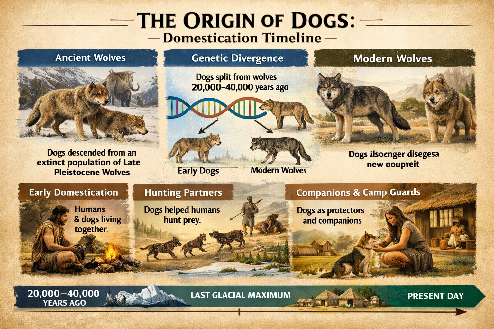

A BRIEF HISTORY
Dogs have been loyal companions to humans for thousands of years and are believed to be the first animals ever domesticated. Scientists believe that dogs evolved from an ancient population of wolves between 20,000 and 40,000 years ago. Over time, some wolves began living closer to human settlements, where they found food and protection.
As humans and these early wolves interacted, a unique relationship developed. The friendlier wolves were more likely to survive and reproduce, gradually evolving into the dogs we know today. This process of domestication made dogs less aggressive and more comfortable living alongside people.
Archaeological evidence shows that dogs were already living with humans at least 14,000 years ago. They assisted people in hunting, guarding homes, herding livestock, and providing companionship. As human societies expanded across the world, dogs accompanied them, adapting to different environments and tasks.
Over centuries, selective breeding led to the development of hundreds of dog breeds, each with unique characteristics and abilities. Some breeds were designed for hunting, others for protection, herding, or simply companionship.
Today, dogs remain one of the most beloved animals in the world. They serve as pets, working animals, therapy companions, and service dogs, continuing a partnership with humans that has lasted for thousands of years.
THE ORIGIN OF DOGS

- Wolf ancestry: All modern dogs (Canis lupus familiaris) descend from a now-extinct population of Late Pleistocene wolves, not the modern wolves alive today .
- Genetic divergence: Dogs split from their wolf ancestors between 20,000–40,000 years ago, during the Last Glacial Maximum.
- First domestication: Dogs were the first species domesticated by humans, predating livestock like sheep, goats, and cattle.